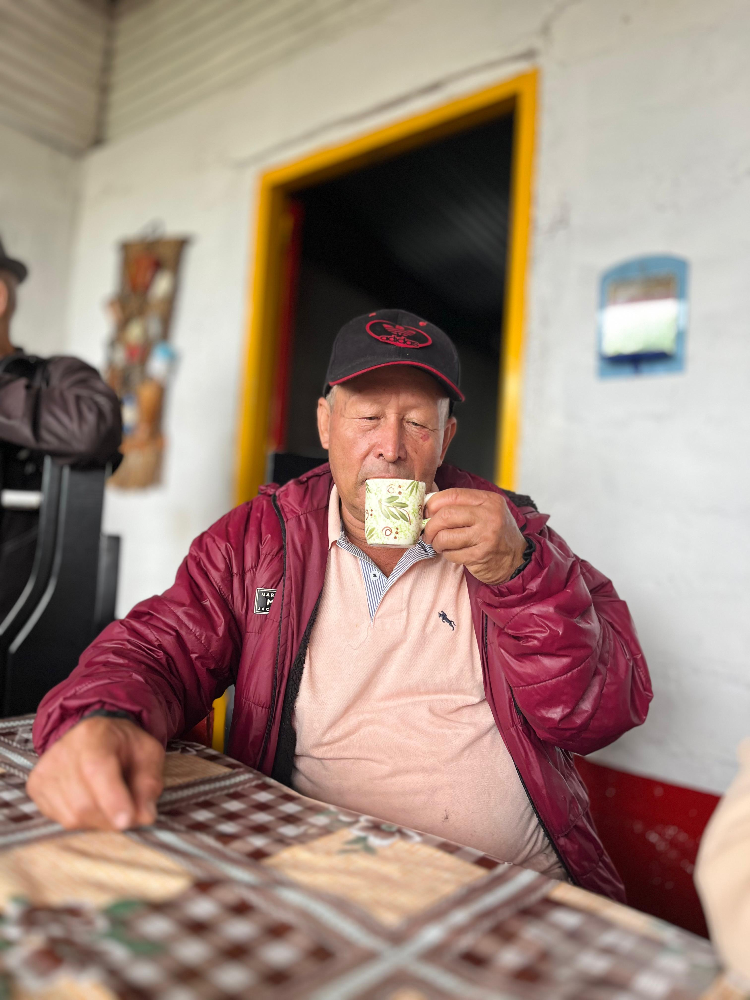
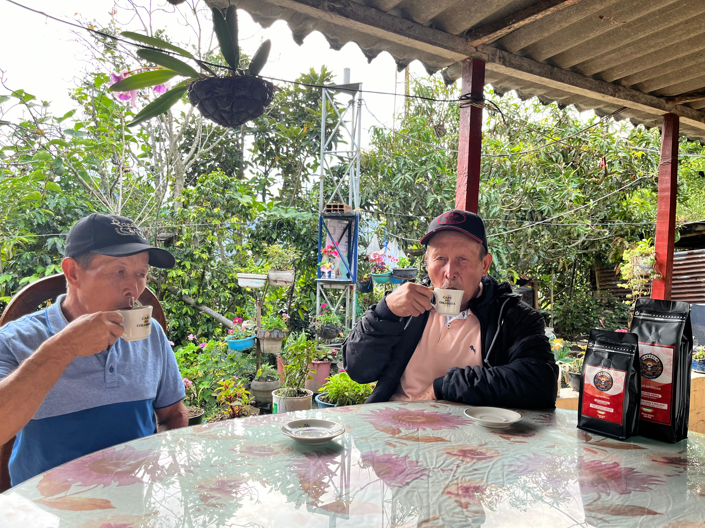

Tradición Cafetera
Desde generaciones atrás, nuestros campos han cultivado pasión, aroma y sabor. Cada grano cuenta una historia de familia, esfuerzo y orgullo colombiano.

Sabores del Alba
Al amanecer, cuando la neblina acaricia las montañas, nace el café más suave, balanceado y fragante, listo para conquistar paladares en todo el mundo.

De la Tierra al Corazón
Cada taza que compartimos es una promesa de calidad, cosechada con amor y entregada con el alma. Porque el café también es una forma de amar.